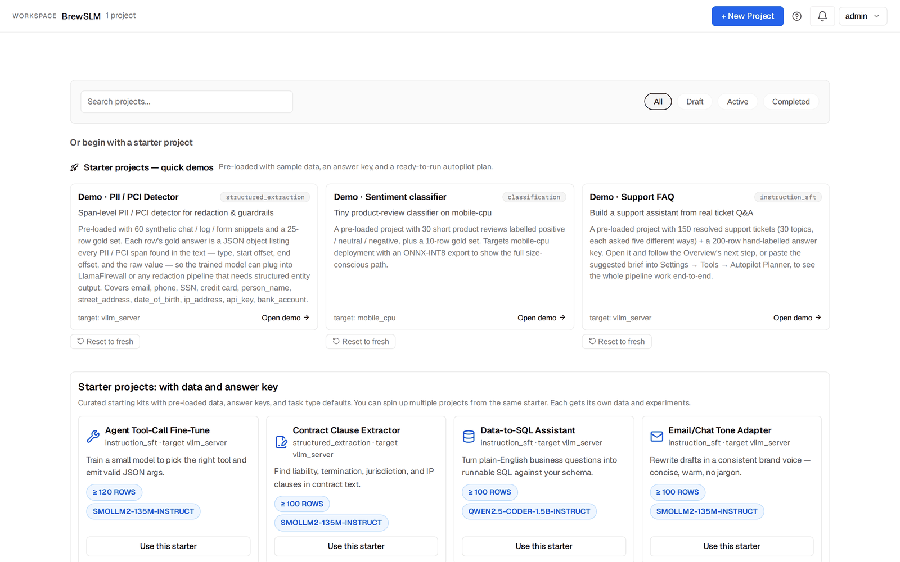
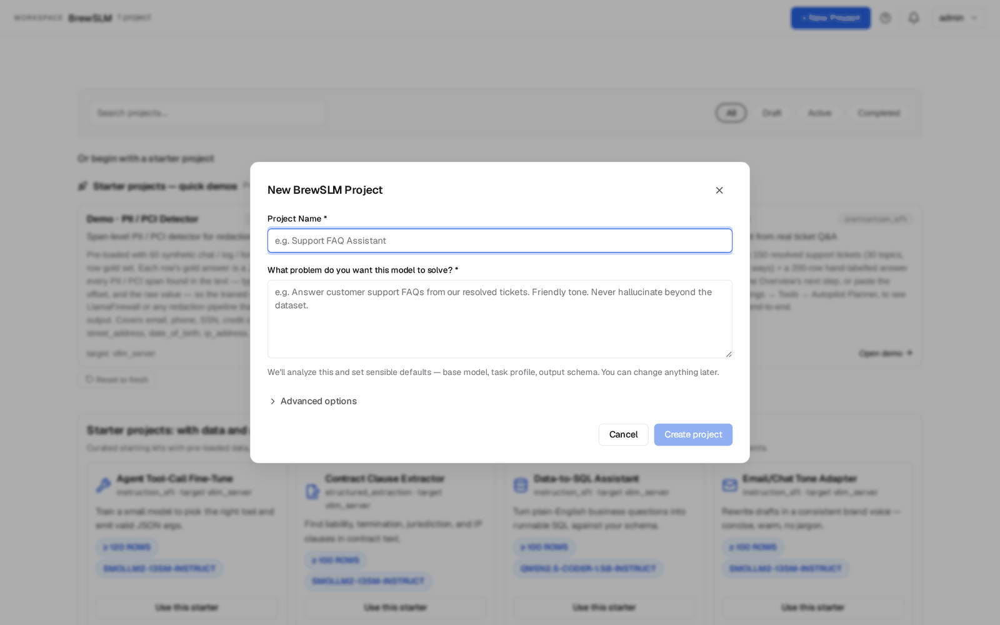
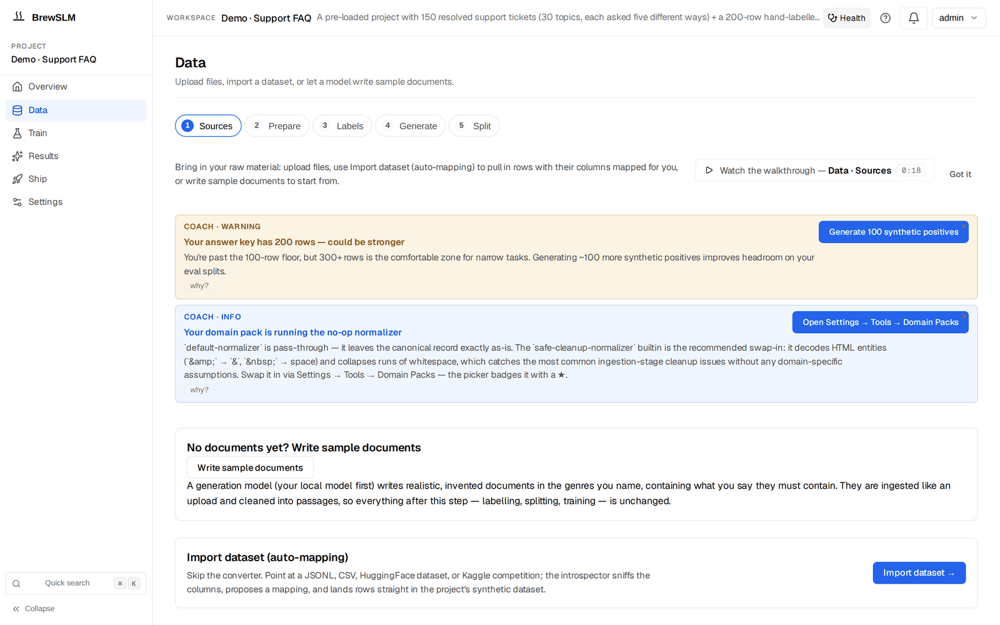

CLI
You already script your ML lifecycle. You want one binary per stage, exit codes, and stdout you can grep.
First milestone: a scripted import + train + export job under CI.
Creation paths for ML teams
BrewSLM exposes the same small language model training workflow through a CLI, an HTTP/Python API, and the workspace UI. Pick the surface that matches how your team works, not a different feature tier.
At-a-glance
You already script your ML lifecycle. You want one binary per stage, exit codes, and stdout you can grep.
First milestone: a scripted import + train + export job under CI.
The SLM lifecycle is one piece of a larger backend. You want the same pipeline as a service call.
First milestone: a service-triggered import + run flow with task-id polling.
You're new to this, a non-shell user, or just want to see what's happening. Six places per project — Overview, Data, Train, Results, Ship, Settings — with inline Coach notices where they apply.
First milestone: a starter project trained and scored without typing a flag.
CLI
The subcommand surface
$ python -m app.cli.dataset_import sources
csv hf jsonl kaggle
$ python -m app.cli.dataset_import mappers
bio_to_spans → task_profile=structured_extraction
chat_messages_passthrough → task_profile=chat_sft
kv_to_structured → task_profile=structured_extraction
label_to_classification → task_profile=classification
preference_pair → task_profile=dpo
qa_pair_passthrough → task_profile=qa
rag_passthrough → task_profile=rag_qa
text_only → task_profile=language_modeling
$ python -m app.cli.dataset_import introspect \
--locator hf:imdb:train
$ python -m app.cli.dataset_import run \
--locator hf:imdb:train --project 1 --auto --limit 5000
Flag highlights
--auto picks the mapper from the introspector's top proposal (gated at 0.80 confidence).--force overrides the confidence gate. Pairs with --auto.--map K=V + --map-json '{…}' override the auto-suggested field map.--drop REASON bulk-drops a rejection category (counts stay in the audit).--limit N stops after N source rows.--llm-assist (opt-in) lets the teacher model propose a mapping when confidence is low.Every command is also exposed via HTTP. The CLI is a thin wrapper over the same service functions the API hits.
HTTP / Python API
Import: introspect → preview → run
POST /api/dataset-import/introspect
{ "locator": "hf:imdb:train", "sample_size": 20 }
POST /api/projects/1/dataset-import/preview
{ "locator": "hf:imdb:train",
"mapper_id": "label_to_classification",
"field_map": { "text_field": "text", "label_field": "label" },
"sample_cap": 5 }
POST /api/projects/1/dataset-import/run
{ "locator": "hf:imdb:train",
"mapper_id": "label_to_classification",
"field_map": { "text_field": "text", "label_field": "label" },
"drop_reasons": ["missing_text"] }
Save once, re-run forever
# 1. Save the mapping after the first import lands.
POST /api/projects/1/dataset-import/configs
{ "name": "weekly-pii-refresh",
"locator": "kaggle:competition:pii-detection-…",
"mapper_id": "bio_to_spans",
"field_map": {…} }
# 2. Re-run anytime against the (refreshed) source.
POST /api/projects/1/dataset-import/configs/12/run
# 3. Read the audit stream.
GET /api/projects/1/run-events?stage=ingestion
The workspace
The projects home has one button and one shelf. + New Project asks for a name and "What problem do you want this model to solve?" and sets the defaults from the answer (base model, task profile, output schema — all changeable later; manifest import sits under Advanced options). Below it, Or begin with a starter project: three quick demos with data and an answer key already in place (Demo · PII / PCI Detector, Demo · Sentiment classifier, Demo · Support FAQ — "Open demo") and a row of starters with data and an answer key ("Use this starter"). Every path lands on the project's Overview.


Importing in the workspace
Data → Sources → Import dataset (auto-mapping) opens the import wizard. It runs the same introspector and mappers as the CLI and the API.

Learn The Concept
The CLI, API, and workspace all wrap the same fine-tuning mechanics. These lessons help you decide what your team is doing when it picks a dataset format, adapts a base model, or moves from a notebook workflow into a platform.
Learn how custom datasets are shaped before they ever reach the CLI, API, or workspace.
Know what happens after the surface hands work to the trainer: LoRA, objectives, and base-model choice.
If you are graduating from notebooks or one-off scripts, this is the Academy path that matches that move.
Pick a door
You can switch surfaces mid-project. A workspace import is indistinguishable from a CLI import in the audit log; a saved mapping created from the UI is callable from the API; everything composes.
# CLI
$ python -m app.cli.dataset_import run --locator hf:imdb:train --project 1 --auto
# API
$ curl -X POST localhost:8000/api/projects/1/dataset-import/run \
-H 'Content-Type: application/json' \
-d '{"locator":"hf:imdb:train","mapper_id":"label_to_classification","field_map":{}}'
# UI
# Data → Sources → "Import dataset (auto-mapping)" → Source → Task type → Map → Preview & Confirm